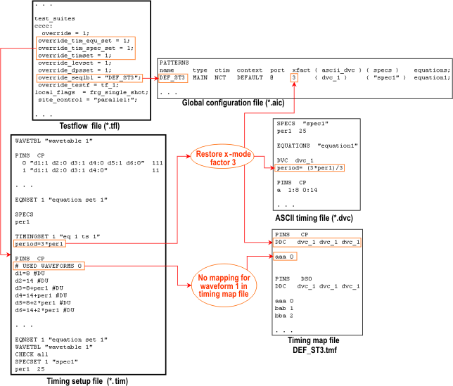
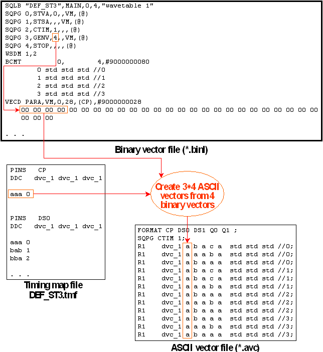

Basic Operation of b2a
The b2a tool restores the (or creates an) ASCII timing and ASCII vector setup from a SmarTest timing and a SmarTest vector setup file. A prerequisite is that the timing is equation based. The reconstruction is performed for pairs of label (pattern) and timing specification (determined by equation set and specset). Such pairs are typically defined in the testsuites of a testflow. Accordingly the pairs, as well as the names of the setup files, are normally passed to b2a by specifying a testflow file. But all this information can also be supplied in a special configuration file (*.bcf).
b2a performs the reconstruction in two steps. In the first step it creates an ASCII timing from the timing setup file and the pin configuration file. This ASCII timing consists of
- one ASCII timing file (*.dvc) for the whole testflow
- one global configuration file (*.aic) for the whole testflow
- separate main timing map files (*.tmf) for every label of the testflow
and separate second level timing map files for every timing set used in the label.
The used timing sets are
- the primary timing set, which is specified for the testsuite in the testflow file, and
- the timing sets that are activated in the sequencer program of the label with a CTIM instruction.
Note that the timing reconstruction must also have access to the vector setup file in order
- to retrieve the pattern names for the global configuration file, and
- to determine the timing sets that are activated with CTIM.
Two main points must be observed in connection with the reconstruction of the ASCII timing:
- The timing translator of the ASCII interface inserts a comment line starting with
#USED WAVEFORMS into the timing sets for every pin. These comments list the
waveforms of the respective pin which are derived from the same ASCII device cycle as the
respective timing set. If b2a finds such a comment line, then its default behavior is to
process only the waveforms listed in this comment for the respective pin and timing set.
This is reasonable for setup files that have been created with the ASCII Interface and have not been changed by the user. If you have created your timing manually or have modified the setup by defining additional waveforms, then you must tell b2a to ignore the comments and to process every waveform in the wavetable. This can be done by setting the -Fw flag in the call of b2a.
- b2a tries to restore the original ASCII period and the x-mode factor of the timing.
For standard pins, the reconstruction is based on
- the period statement of the timing set, and
- the device cycle names.
The x-mode factor is reconstructable from the period statement only if the period is specified in the format n * expression, where expression can be simply the name of a spec variable or even a constant, but also something more complex. b2a takes n to be the x-mode factor.
The x-mode factor is reconstructable from the device cycle names if these have been created by ait with the option -Fx.
b2a considers both options. If the reconstructed x-mode factors are different, the value inferred from the device cycle names prevails.
For fast pins, the x-mode factor is reconstructed from the period_div statement in the timing set.
Note that b2a does not create an x-mode control file (*.cmb). You may have to create such a file manually if you want to translate the reconstructed ASCII timing with the ASCII interface.
The following figure illustrates these points:

In the second step, b2a uses the timing map files created in the first step to convert the binary vector setup of the respective label into an ASCII vector file. A separate ASCII vector file is created for every label of the testflow.
The following figure illustrates the vector retranslation:

Note that the timing map file is used by b2a and aiv in opposite directions. b2a looks it up to find the state character for a given waveform index (not the index for a given state character).